Part 1 · Our NPay milestone (section 1)
One tap: digits roll, a row slides in
- A smooth balance update
- An animated transaction insertion
- A payment-success transition
- ₹25,000 → ₹23,500: how, without drawing every frame?
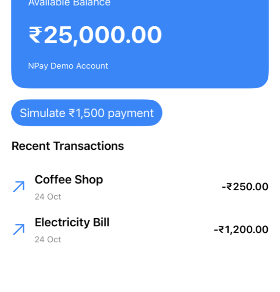
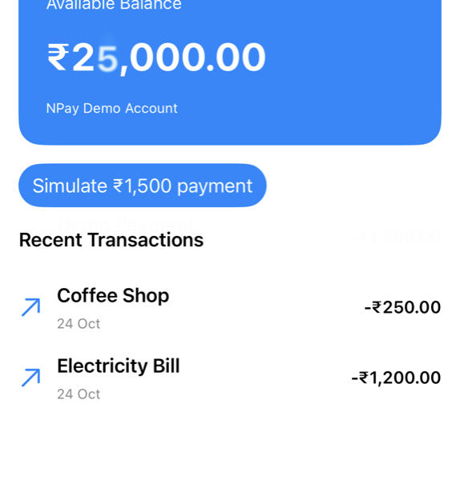


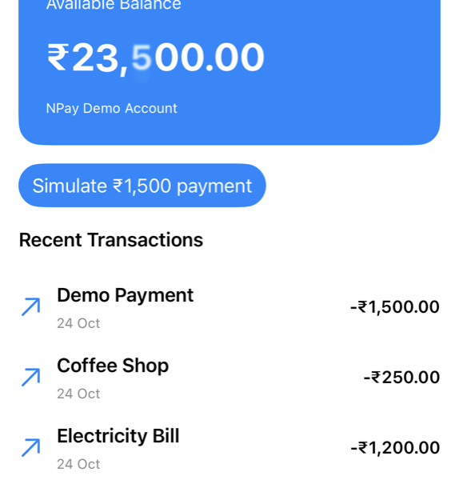
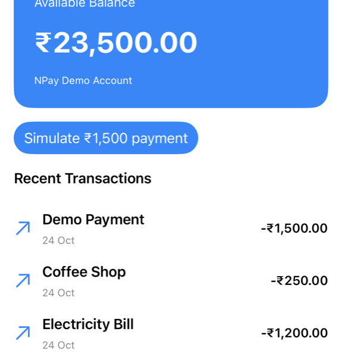
Frames captured by the app after “Simulate ₹1,500 payment” (iPhone 17 simulator)
Part 2 · First experiment: withAnimation (sections 2–3)
80 to 180 points, no frames written
struct AnimationExperiment: View {
@State private var expanded = false
var body: some View {
VStack(spacing: 30) {
Circle()
.fill(.blue)
.frame(width: expanded ? 180 : 80,
height: expanded ? 180 : 80)
Button("Toggle Size") {
withAnimation(.easeInOut(duration: 0.5)) {
expanded.toggle()
}
}
.buttonStyle(.borderedProminent)
}
.padding()
}
}- How a visual value changes over time
- SwiftUI interpolates animatable properties

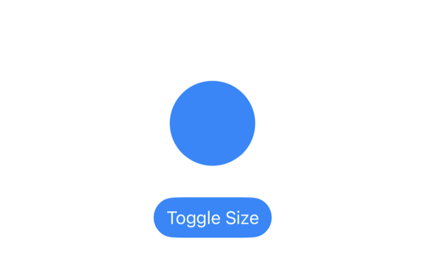


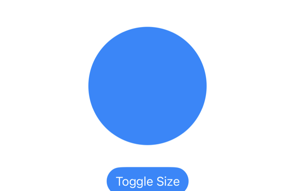

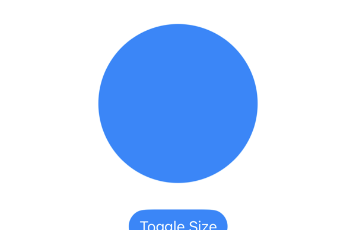
Frames the app captured after Toggle Size
expandedchanged insidewithAnimation- The update carried an animation; the frame size followed it
Part 5 · NPay’s animated success screen (section 11)
The checkmark springs in
@State private var showContent = false
var body: some View {
VStack(spacing: 24) {
if showContent {
Image(systemName: "checkmark.circle.fill")
.font(.system(size: 80))
.foregroundStyle(.green)
.transition(.scale.combined(with: .opacity))
}
Text("Payment Recorded")
.font(.title.bold())
// message, ID, Back to Dashboard as in 3.2
}
.onAppear {
withAnimation(.spring(response: 0.45,
dampingFraction: 0.7)) {
showContent = true
}
}
}- On appear,
showContent: false → true - The checkmark is inserted: scale + opacity
- The spring paces the transition
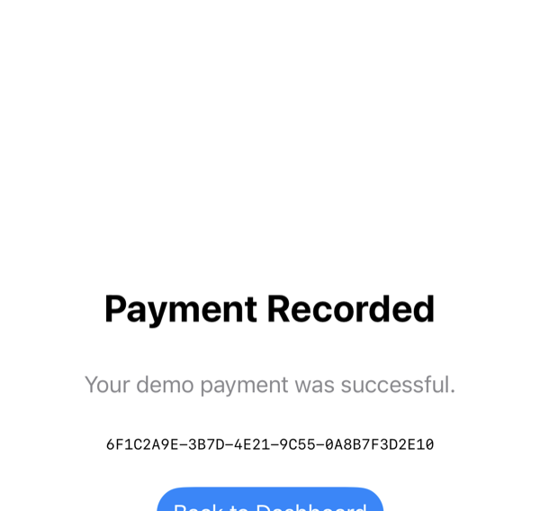
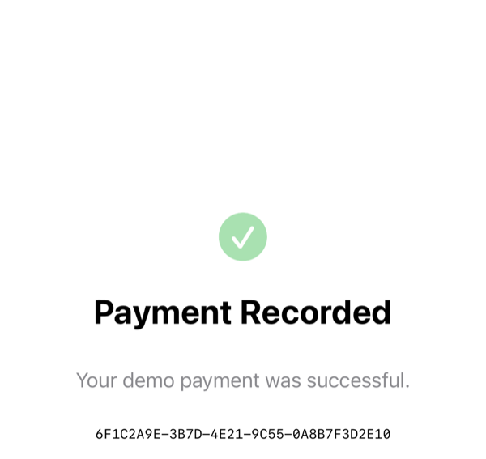
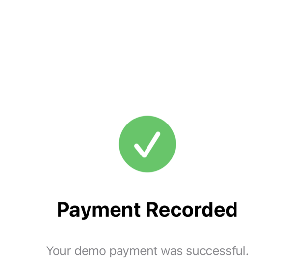

The text’s screen, frames captured after it appeared
Part 5 · Remove withAnimation; enable Reduce Motion (sections 14, 15, 22)
Same transition modifier, no motion
Without withAnimation (showContent = true in onAppear)


Reduce Motion on (Settings value read by the text’s Section 22 code: accessibilityReduceMotion: true)


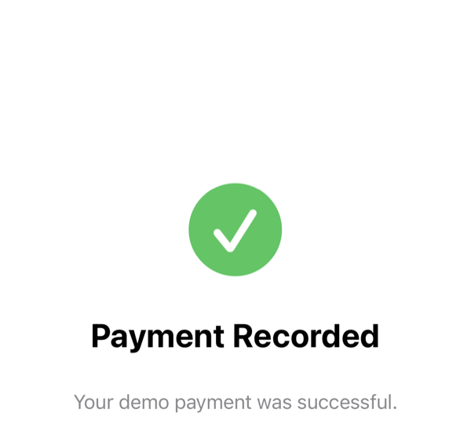


Part 6 · Animate NPay’s balance card (section 9)
Digits roll; paise stay integers
Text(Money.display(balancePaise))
.font(.largeTitle.bold())
.contentTransition(.numericText())
.animation(.easeInOut(duration: 0.4),
value: balancePaise)numericText()changes how text changes- Money is still an
Intof paise
The balance during the change
Part 6 · Animate transaction insertion (section 10)
Insert inside withAnimation; the row transitions in
withAnimation(.easeInOut(duration: 0.3)) {
transactions.insert(newTransaction, at: 0)
}
// in a VStack (our Animation Lab)
ForEach(transactions) { transaction in
TransactionRow(transaction: transaction)
.transition(.move(edge: .top)
.combined(with: .opacity))
}- Insertion animation is more platform-managed
- May differ from a VStack
“Demo Payment” slides in; rows below move down